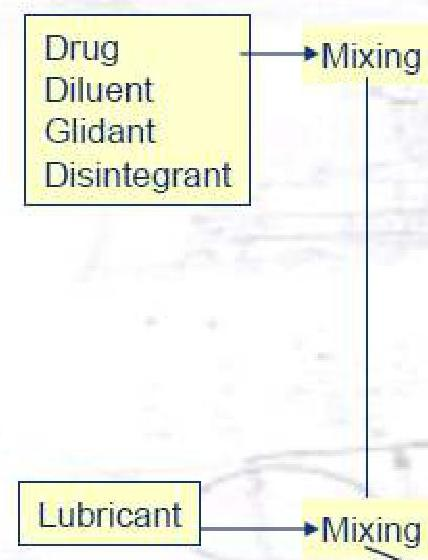
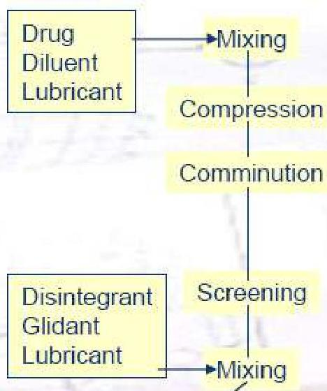
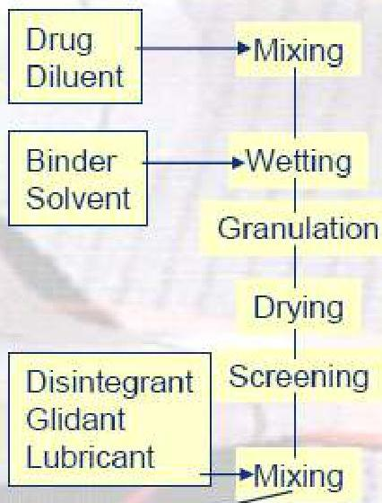
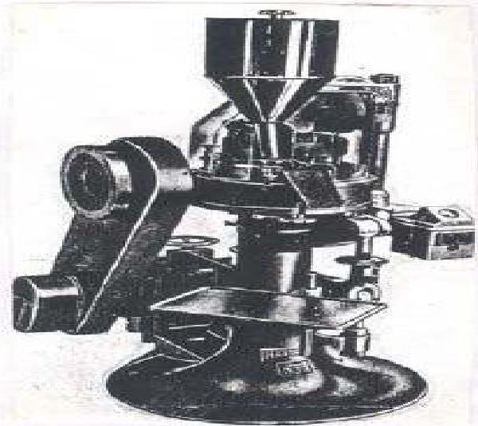
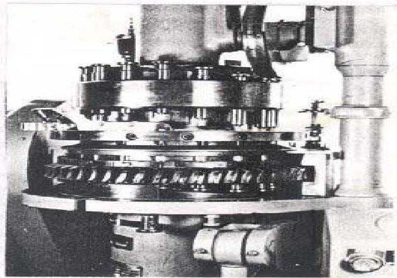
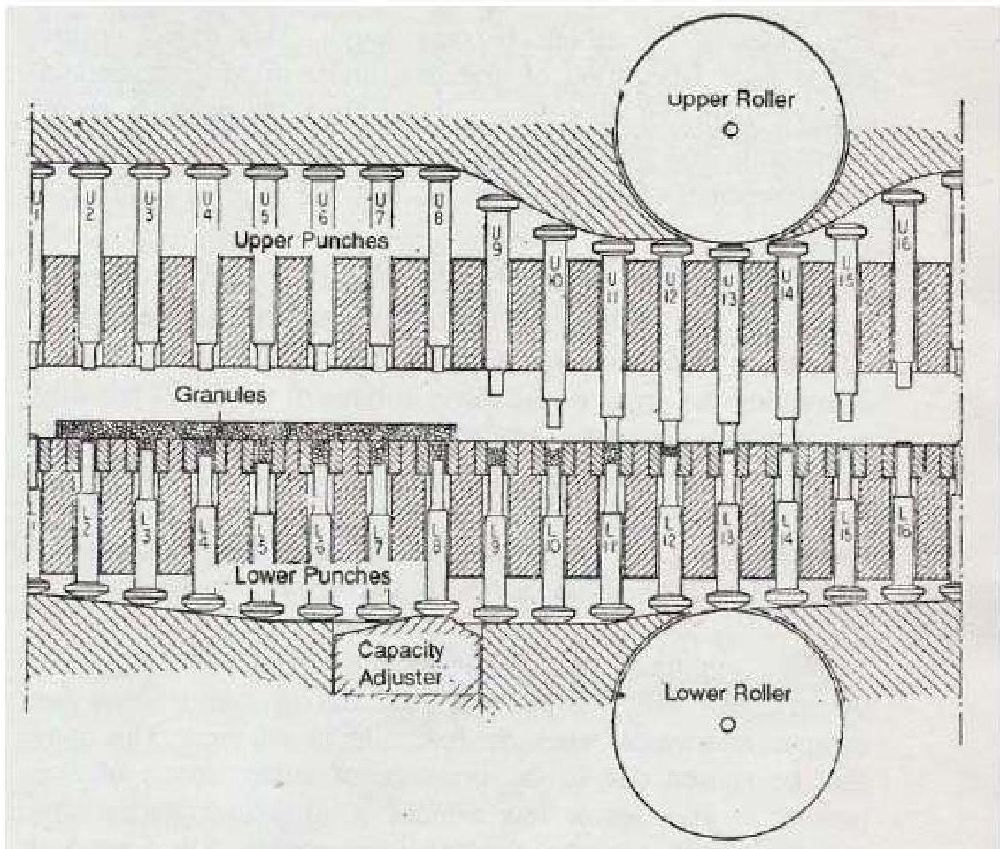

⚙️
Topic 03
Manufacturing Technology
01
Granulation Technology
Granulation technology on large scale by various techniques includes:



General Process Flow:
- Fill Die
- Compress Tablet
- Eject Tablet
- Metal check, Dedusting, Coating, Packaging etc..
02
Tablet Compression Machine
Tablets are made by compressing a formulation containing a drug or drugs with excipients on stamping machine called presses. Tablet presses are designed with following basic components:
- Hopper for holding and feeding granulation
- Dies that define the size and shape of the tablet.
- Punches for compressing the granulation within the dies.
- Cam tracks for guiding the movement of the punches.
- A feeding mechanism for moving granulation from hopper into the dies


